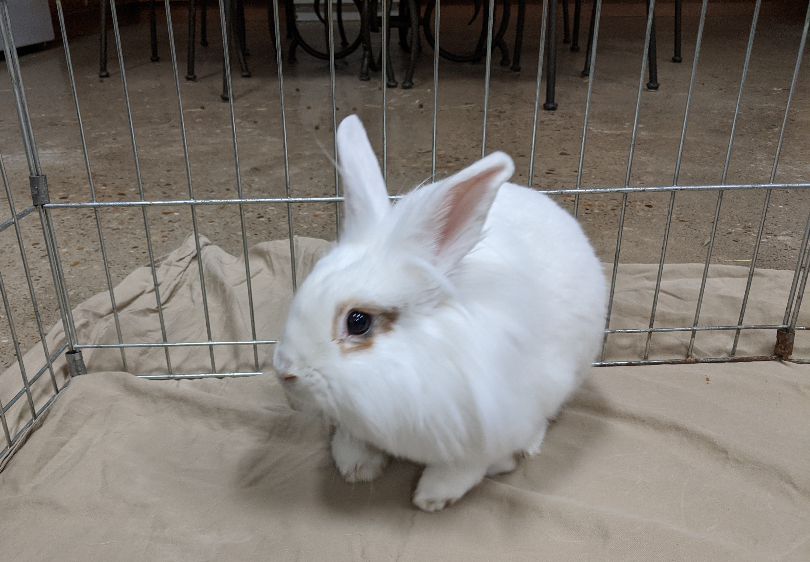

My other section
How I Got My Bunnies
Bailey was my first bunny, he was are class pet. One weekend, I got to take home, but soon, it was time to take him back to school. One week later, my teacher, Ms.Willett, said I could have him as my pet because her pets don't get along with Bailey and she can't spend time with Bailey to much. It was my honor! I asked my parents for premition and they said ,"FINE!!" We had so much fun with Bailey but he sometimes looked bored and sad, and we search up that bunnies are vaery social so we decided he needed a friend, so we went throught a bunny bonding proces and that's how we got Mo!
The Bunny Bonding Proces
First you pick out 1-5 bunnies, then the first bunny on the list along with yours goes to someone elses house who moniters them. If they get along, we keep them. First we tried this Bunny named Lilly, but they didn't get along. Then we tried Mo, they got along but when we brought them home after a few weeks, they started fighting. So we had to give him back. But we are thinking of bringing him back!

How to Make Bunny Songs
First you find a voice for your bunny that fits him. Then you make up words like these:
- Ee-thE-boo boo-thee-goo goo-thee-boo-thee-bumbum-po
- Ooo-gee!!
- Li-lu the-bee-oli-olu
Thank you for visiting my blog!!! :)